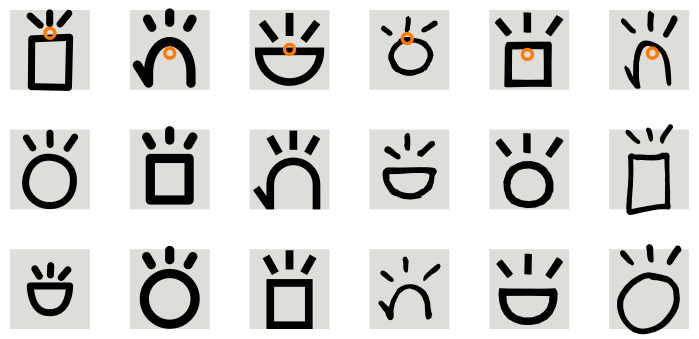

sitelen pona is a logographic writing system for toki pona, so each character here indicates a separate word. sitelen pona's glyphs have high iconicity, meaning they represent their meaning visually in some way most of the time. The relative proportions, width, height and size of glyphs can vary between glyphs and fonts (linja lipamanka and nasin sitelen pu have some glyphs be smaller), though most widely used fonts today (namely nasin-nanpa) are monospaced, so they all fit within the same em-box (represented by a gray box in the image below). They are centered relative to it, with some optical adjustments and overshooting.
They are also mostly composed of recurring simple shapes called radicals, like circles, lines, rectangles and curves. They can appear as different propotions and sizes in different glyphs. Dots are usually of the same size, whether they're used for the position glyphs or as creatures' eyes. Circles can be substituted for ovals to take up more character width, like in mama. (TODO: ADD MAMA EXAMPLE) A radical to look out for are emmitters, like those shown below. Their lengths and point of origin can also differ between fonts and glyphs to better fit their shapes. The approximate center of the emitters will be represented by an orange circle.
